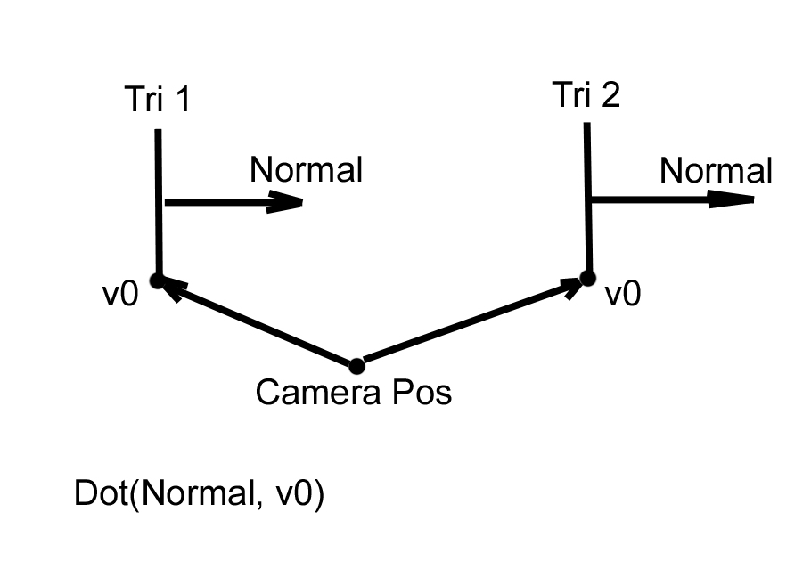
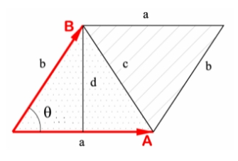

Загрузить архив с примерами ЗДЕСЬ.
Загрузить исходный код можно /src/01.002-back_face_cul/Cube_Tri1.
В примере исходного кода Проволочная модель куба из треугольников встречается метод отбрасывания задних поверхностей.
Для того что бы отбрасывать невидимые (задние) треугольники на сцене проволочной модели куба не достаточно. Нам нужно перейти к модели куба построеной из треугольников. В примере у нас есть куб из треугольников, мы между каждой вершиной v1, v2, v3 каждого треугольника проводим линию. Сам куб построен из треугольников (не из линий как в первых примерах), но выглядит как проволочная модель (выглядит как модель из линий в первых примерах) Треугольник имеет плоский вид, мы можем вычислить нормаль к треугольнику, и определить видим треугольник (полигон, поверхность) или нет. Если взять проволочную модель куба, то мы видим что задние стенки куба просвечиваются, и мы не можем их удалить из процесса отрисовки сцены. Удалть задние стенки куба можно только если модель куба состоит из треугольников. Треугольник- это базовый элеент из которых состоит трехмерная сцена- так принято в компьютерной графике. Из треугольника можно построить все что угодно- сферу, торус, куб, любую геометрическую фиругу, трехмерную сцену любой сложности.
Задние поверхности на сцене- это те, нормаль которых направлена в противоположную сторону от зрителя, т.е. фактически нормаль таких поверхностей совпадает с вектором взляда камеры (наблюдателя).
Принцип отбрасывания задних поверхностей основан та том, что есть нормаль к полигону (она рассчитываеться для каждого треугольника), есть вектор куда смотрит камера- мы его инвертируем что бы он по направлению совпадал с нормалью к полигону. Если угол между векторами (то есть dot product двух единичных векторов) меньше 90 градусов (в расчетах ниже беруться радианы) значит полигон видим, мы его не пропускаем в дальнейшей обработке. Если угол больше 90 градусов- значит полигон смотрит в обратную от наблюдателя сторону, мы этот полигон пропускаем. То есть фактически береться угол- куда смотрит полигон, и инвертированный вектор куда смотрит камера. Для вычисления угла мы берем dot product двух векторов. dot product двух векторов возвращает cos угла между вектороами. Если dot product (т.е. косинус) меньше или равно 0 значит угол между векторами больше 90 градусов, если dot product (т.е.косинус) больше 0 - значит угол в пределах от 0 до 90 градусов.
Этот метод с использованием нормали к треугольнику носит название Алгоритм Робертса. Алгоритм Робертса (известный как алгоритм удаления невидимых линий и поверхностей) предназначен для определения, какие части 3D-объекта должны быть видимыми с определённой точки зрения. Этот алгоритм один из ранних методов, разработанных для решения задачи видимости в компьютерной графике.
Давайте зглянем в функцию Draw_Cube проекта. Сначала мы получаем три вершины треугольника v1, v2, v3:
for (UINT i = 0; i < nIndexCount; i++)
{
vector3 v1 = m_vert_buff_transformed[m_index_buff[i * 3]];
vector3 v2 = m_vert_buff_transformed[m_index_buff[i * 3 + 1]];
vector3 v3 = m_vert_buff_transformed[m_index_buff[i * 3 + 2]];
Далее у треугольника определяем два края (две стороны) edge1 и edge2, и нормализуем их:
vector3 edge1,edge2,vcross,vLook; edge1 = v2 - v1; edge2 = v3 - v1; edge1 = Vec3_Normalize(edge1); edge2 = Vec3_Normalize(edge2);
Далее находим нормаль к треугольнику vcross:
vcross = Vec3_Cross(edge1, edge2); vcross = Vec3_Normalize(vcross);
Тут есть один важный момент. Если мы вычисляем vcross до того как вершины трансформируются в экранные координаты то нужно писать так:
vcross = Vec3_Cross(edge1, edge2);
Если мы уже трансформировали вершины в экранные координаты (т.е. уже умножили на экраную матрицу, перевели в экранные координаты), то вычисление vcross такое:
vcross = Vec3_Cross(edge2, edge1);
Почему так? До экранных координат ось Y простирается вверх (от центра экрана), после преобразования вершин в экранные координаты ось Y простирается вниз (от левого верхнего угла дисплея). Это приводит к тому что меняется порядок обхода вершин, поэтому по разному нужно вычислять vcross.
Определяем вектор обратный вектору взгляда наблюдателя:
vLook.x = 0.0f; vLook.y = 0.0f; vLook.z = -1.0f;
Вычисляем скалярное произведение двух единичных векторов. Скалярное произведение двух единичных векторов равно косинусу угла между ними. Если косинус получился от 0 до 1 значит угол между векторами от 0 до 90 градусов. Если меньше 0 то угол больше 90 градусов.
float angle_cos = Vec3_Dot(vcross, vLook); if(angle_cos <= 0.0) //backface culling continue;
Но этот метод не всегда работает. Например у нас есть сцена - изображена комната. В комнате есть пол, пол конечно расположен горизонтально- т.е. нормаль к треугольникам из которых состоит пол будет (0, 1, 0), т.е. смотреть вверх паралельно оси Y. В то же вермя предположим у нас есть камера, вектор куда смотрит камера (vLook) равен (0, 0, 1) то есть смотрит в сторону оси Z. Конечно угол между нормалью к треугольникам из которых сосотоит пол, и угол между горизонтальным направлением вектора куда смотрит камера составляет 90 градусов, поэтому в данном случае треугольники из которых состоит пол будут отбрасыватся - а нам это не надо. Поэтому есть другие способы отбрасывания задних поверхностей, как например ледующий.
Более продвинутый метод отбрасывания задних поверхностей загрузить проект /src/01.002-back_face_cul/Cube_Tri2. Подходит для сложных сцен, которые расчитыватся с помощью матрицы Вида. В этом случае вершины сначала умножаются на матрицы Мира и Вида в функции Calculate_Cube:
for (UINT i = 0; i < nVertCount; i++)
{
vector3 v;
v = Vect3_Mat4x4_Mul(mxRotateY, m_vert_buff[i]);
v = Vect3_Mat4x4_Mul(mWorld, v);
v = Vect3_Mat4x4_Mul(mView, v);
m_vert_buff_transformed[i] = v;
}
Затем после умножения на матрицы Мира и Вида и до умножения на матрицу Проекции и до деления на Z в функции Draw_Cube выполняется отбрасывание задних поверхностей:
for (UINT i = 0; i < nTriangleCount; i++)
{
vector3 v1 = m_vert_buff_transformed[m_index_buff[i * 3]];
vector3 v2 = m_vert_buff_transformed[m_index_buff[i * 3 + 1]];
vector3 v3 = m_vert_buff_transformed[m_index_buff[i * 3 + 2]];
vector3 edge1,edge2,vcross;
edge1 = v2 - v1;
edge2 = v3 - v1;
edge1 = Vec3_Normalize(edge1);
edge2 = Vec3_Normalize(edge2);
vcross = Vec3_Cross(edge2, edge1);
vcross = Vec3_Normalize(vcross);
float angle_cos = Vec3_Dot(vcross, v1);
if(angle_cos < 0.0) //backface culling
continue;

Ниже представлен аналогичный пример, но отбрасывание задних поверхностей производится после умножения на матрицу Мира до умножения на марицу Вида. См.функцию Draw_Cube. Загрузить проект /src/01.002-back_face_cul/Cube_Tri3.
for (UINT i = 0; i < nTriangleCount; i++)
{
vector3 v1 = m_vert_buff_transformed[m_index_buff[i * 3]];
vector3 v2 = m_vert_buff_transformed[m_index_buff[i * 3 + 1]];
vector3 v3 = m_vert_buff_transformed[m_index_buff[i * 3 + 2]];
vector3 edge1,edge2,vcross;
edge1 = v2 - v1;
edge2 = v3 - v1;
edge1 = Vec3_Normalize(edge1);
edge2 = Vec3_Normalize(edge2);
vcross = Vec3_Cross(edge2, edge1);
vcross = Vec3_Normalize(vcross);
vector3 vLook = v1 - vPos;
float angle_cos = Vec3_Dot(vcross, vLook);
if(angle_cos < 0.0) //backface culling
continue;
Так как после умножения на матрицу Вида центр сцены смещается в позицию где находится камера, то в этом примере до умножения на матрицу Вида, необходимо выполнить следующую операцию:
vector3 vLook = v1 - vPos;
Еще один способ отбрасывания задних поверхностей модели при помощи псевдоскалярного (или косого) произведения векторов. Псевдоскалярное (косое) произведение векторов позволяет определить вершины треугольника расположены по часовой стрелке или против. Косое произведение векторов это площать паралелограма (то есть 2 треугольника), и если площадь > 0 то обход вершин по часовой стрелке если площадь < 0 то против часовой стрелки. В проекте эту процедуру мы выполняем после преобразования в экранные координаты. Загрузить проект /src/01.002-back_face_cul/Cube_Tri4. Математически косое произведение векторов выражается формулой:
a ^ b = |a| * |b| * sin(angle) = 2S
где angle - угол вращения (против часовой стрелки) от a к b. Геометрически псевдоскалярное произведение векторов это ориентированная площадь параллелограмма, натянутого на эти вектора. Если эту площадь поделить на 2 мы узнаем площадь самого треугольника, поэтому в формуле выше указано 2S - т.е. двойная площадь треугольника. На рисунке ниже площадь паралелограмма равна псевдоскалярному (косому) произведению векторов.
Косое произведение вычисляется как величина определителя матрицы, составленного из координат точек:
|x1 y1 1| 2S = |x2 y2 1| |x3 y3 1|
Вычислим определитель, т.е. детерминант этой матрицы:
2S = x1 * (y2 - y3) + x2 * (y3 - y1) + x3 * (y1 - y2)
Можно сгруппировать третье слагаемое с первыми двумя, избавившись от одного умножения:
2S = (x2 - x1) * (y3 - y1) - (y2 - y1) * (x3 - x1)
Последнюю формулу удобно записывать и запоминать в матричном виде, как следующий определитель (в практическом применении в нашем примере):
|v2.x - v1.x v3.x - v1.x| 2S= | | |v2.y - v1.y v3.y - v1.y| float vt1 = v2.x - v1.x; float vt2 = v2.y - v1.y; float wt1 = v3.x - v1.x; float wt2 = v3.y - v1.y; |vt1 wt1| 2S= | | |vt2 wt2| //back face culling - детерминант матрицы if ((vt1*wt2 - vt2*wt1) <= 0) continue;
Несколько функций касательно псевдоскалярного (косого) произведения векторов:
Функция, вычисляющая удвоенную знаковую площадь треугольника:
int triangle_area_2 (int x1, int y1, int x2, int y2, int x3, int y3)
{
return (x2 - x1) * (y3 - y1) - (y2 - y1) * (x3 - x1);
}
Функция, возвращающая обычную площадь треугольника:
double triangle_area (int x1, int y1, int x2, int y2, int x3, int y3)
{
return abs (triangle_area_2 (x1, y1, x2, y2, x3, y3)) / 2.0;
}
Функция, проверяющая, образует ли указанная тройка точек поворот по часовой стрелке:
bool clockwise (int x1, int y1, int x2, int y2, int x3, int y3)
{
return triangle_area_2 (x1, y1, x2, y2, x3, y3) > 0;
}
Функция, проверяющая, образует ли указанная тройка точек поворот против часовой стрелки:
bool counter_clockwise (int x1, int y1, int x2, int y2, int x3, int y3)
{
return triangle_area_2 (x1, y1, x2, y2, x3, y3) < 0;
}
Давайте проверим на практике как работает косое умножение векторов. Пусть есть три вершины расположенные по часовой стрелке, тогда результат s = 60000.
int main()
{
/*
v1
v2
v3
*/
int x1 = 300, y1 = 50;
int x2 = 500, y2 = 150;
int x3 = 100, y3 = 250;
int s = (x2 - x1) * (y3 - y1) - (y2 - y1) * (x3 - x1);
return 0;
}
Теперь давайте вершины v2 и v3 поменяем местами (поменяем их координаты x и y местами). В таком случае обход вершин будет против часовой стрелке и s = -60000, т.е. s будет отрицательное число.
int main()
{
/*
v1
v3
v2
*/
int x1 = 300, y1 = 50;
int x2 = 100, y2 = 250;
int x3 = 500, y3 = 150;
int s = (x2 - x1) * (y3 - y1) - (y2 - y1) * (x3 - x1);
return 0;
}
Еще один способ отбрасывания задних поверхностей, выполняется в видовом пространстве - т.е. после умножения вершин на матрицу вида. Загрузить проект /src/01.002-back_face_cul/Cube_Tri5.